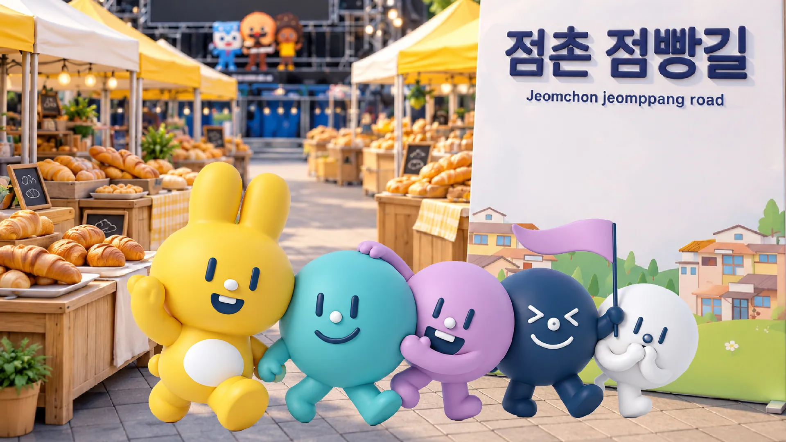
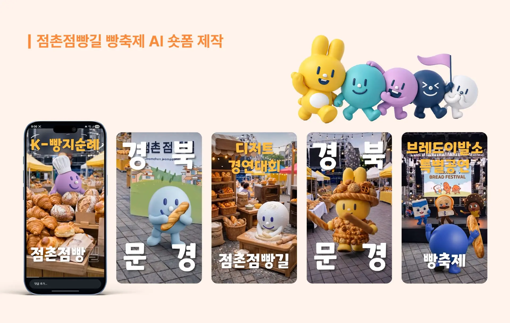

점촌점빵길 빵축제 AI 숏폼

점촌점빵길 빵축제 AI 숏폼 홍보영상
AI 이미지·영상 생성 기술을 활용해 빵축제의 분위기를 캐릭터 중심의 짧고 직관적인 숏폼 콘텐츠로 구성했습니다. 영상의 분위기에 어울리는 음악 역시 AI를 활용해 제작했으며, 생성된 시각·음향 소스를 후반 편집으로 결합해 축제의 즐거움과 생동감을 표현했습니다.
-
Using AI-powered image and video generation technology, we captured the atmosphere of the Bread Festival in short-form, character-driven content that is both concise and intuitive. We also used AI to create music that complements the video’s mood, and combined the generated visual and audio elements through post-production editing to convey the festival’s joy and vibrancy.
-
Project Scope
- 1. AI Image & Video Generation.
- 2. AI Music Production.
- 3. Video Editing & Post-Production.

점촌점빵길 빵축제 AI 숏폼 홍보영상
-
기간 : 2026.05
소속 : 픽셀아크
클라이언트 : (주)문화이야기
분야 : AI 영상 제작
담당 : AI 이미지·영상 생성 · AI 음악 제작 · 편집